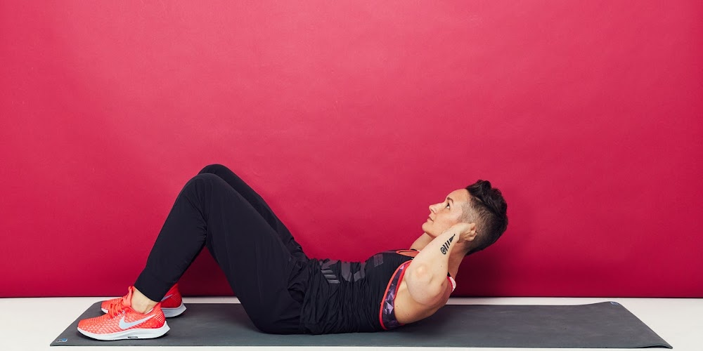

10 Exercises That You Can Do at Home
When you’re working hard to get fit and lose weight, you want a regular routine that provides strong results.Good news: You don’t even need to become a gym rat. But what kind of exercise burns the most calories? These exercises will guide you in the right direction.
1.Squats
Squats are one of the most basic lower-body exercises for toning and strengthening the lower body, and they're frequently used in weight-gain workouts. You may graduate to more harder variations by adding weights once you've mastered the basic squat form.
How to do?
- Standing tall with your back straight and your feet slightly wider than hip-width apart is a good place to start. With your arms out in front of you, maintain a straight posture.
- Squeeze your glutes and move your butt backward rather than merely bending your knees.
- Start by inhaling, engaging your core, and bending your knees while pushing your butt out.
- Sit with your weight supported by your heels. Lower your hip joints till they are lower than your knees. Because that's exactly what a full squat is.
- Keep your hands in this posture for three seconds.
- Exhale and begin to stand up, keeping your weight on your heels.
2.Push-ups
Push-ups are a great exercise to start with if you're a novice. When it comes to strengthening the upper body, it is one of the most essential workouts for weight growth. Push-ups, above all, help you build muscle in your arms and shoulders.
- Lie down on the ground, face down.
- Hands should be somewhat broader than shoulders.
- Push yourself up slowly until your arms are completely extended.
- Lower yourself to the point when your chest is almost touching the floor.
- Push yourself back up after a little pause.
3.Lunges
Lunges, like squats, aid in the bulking and toning of your leg and hip muscles. It's one of the most effective ways to gain weight. You may also add weights or attempt various lunge variations to make the workout more tough.
How to do?
- Flex your abdominal muscles while standing up straight.
- Make a big step forward.
- Lower your body until your shin is vertical and your thigh is parallel to the floor.
- Return to your original position by pressing back on your heel.
- Rep with the opposite leg.
4.Tricep-dips
Tricep Dips are another simple arm and back workout that you may practise at home to gain weight. Dips might help you gain muscular growth in your upper body if done correctly. This workout can also aid in the development of strength for other exercises such as the bench press.
How to do?
- Sit at the chair's or bench's edge and grip the edges with your hands.
- Get out of your seat and drop your hips to the ground.
- Maintain the posture by applying pressure to your palms.
- Slowly return to your original seated posture.
5.Pull-ups
Pull-ups, particularly with weights, are an excellent method to bulk up your muscles. If you're a novice, start with basic pull-ups and progress to weighted pull-ups as your strength improves. You may use a pull-up bar if you're practising this weight gain workout at home.
How to do?
- With your palms facing away from you and arms shoulder-width apart, grab the pull-up bar with both your hands.
- Pull yourself up to the point where your feet aren't touching the ground, and keep going until your chin is clear of the bar.
- Slowly lower yourself until your arms are straight once again.
6.Dumbbell overhead press
Pull-ups, particularly with weights, are an excellent method to bulk up your muscles. If you're a novice, start with basic pull-ups and progress to weighted pull-ups as your strength improves. You may use a pull-up bar if you're practising this weight gain workout at home.
How to do?
- Maintain a straight back and stand tall.
- While inhaling, hold a dumbbell in each hand and elevate the weights above your head in a smooth manner.
- While breathing, hold the posture and return to the beginning position.
7.Bench Press
Pull-ups, particularly with weights, are an excellent method to bulk up your muscles. If you're a novice, start with basic pull-ups and progress to weighted pull-ups as your strength improves. You may use a pull-up bar if you're practising this weight gain workout at home.

How to do?
- Begin by laying on the bench with the bar in your hands.
- Warm up with just the bar and no weights first, then add the weights.
- Before lowering the bar to your chest, hold it again and lock your elbows out.
- Lift the bar over your chest with your arms fully extended, taking a deep breath.
- Bring the bar to the original position and repeat.
8.Crunches
Pull-ups, particularly with weights, are an excellent method to bulk up your muscles. If you're a novice, start with basic pull-ups and progress to weighted pull-ups as your strength improves. You may use a pull-up bar if you're practising this weight gain workout at home.
How to do?
- With your knees bent and your feet flat on the floor, lie flat on a carpet or your yoga mat.
- Inhale while crossing your arms over your chest and contracting your abs.
- Exhale and elevate your upper body while maintaining a relaxed head and neck.
- Return to the starting position by inhaling.
9.Deadlift
Pull-ups, particularly with weights, are an excellent method to bulk up your muscles. If you're a novice, start with basic pull-ups and progress to weighted pull-ups as your strength improves. You may use a pull-up bar if you're practising this weight gain workout at home.
How to do?
- Stand with your midfoot under the barbell.
- Kneel till your shin is in contact with the bar. Straighten your spine and raise your chest.
- Take a deep breath and lift your weight to your feet. Bring the weight to the top and maintain the posture with your hips and knees locked for a second.
- Return the weights to the floor by bending your legs and sliding your hips back.
- Rest for a second and repeat.
10.Banded Side Steps
Pull-ups, particularly with weights, are an excellent method to bulk up your muscles. If you're a novice, start with basic pull-ups and progress to weighted pull-ups as your strength improves. You may use a pull-up bar if you're practising this weight gain workout at home.
How to do?
- Wrap the resistance band over your calves and tighten it.
- Squat down in a semi-seated position, holding your shoulders back, while standing with your feet under your hips.
- Push your heel on the band as you take a step to the side.
- Bring the other foot in until your feet are hip-width apart once more.